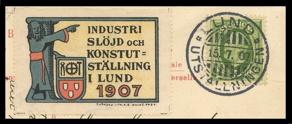
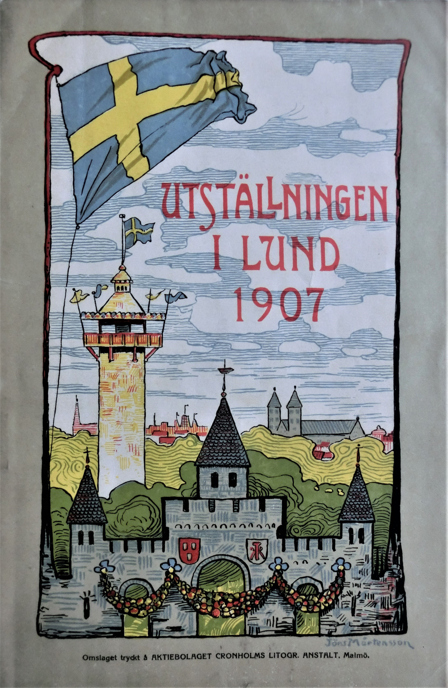
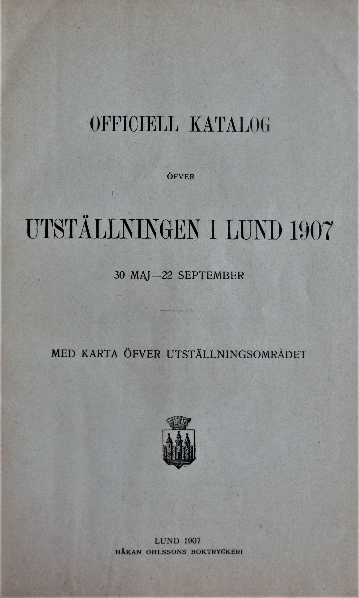
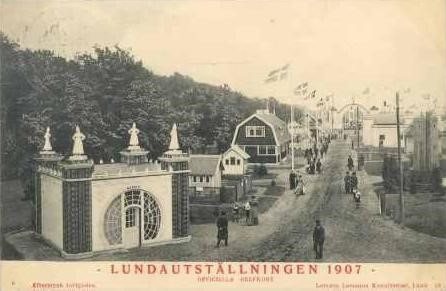
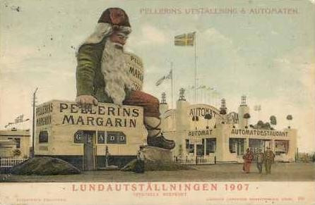
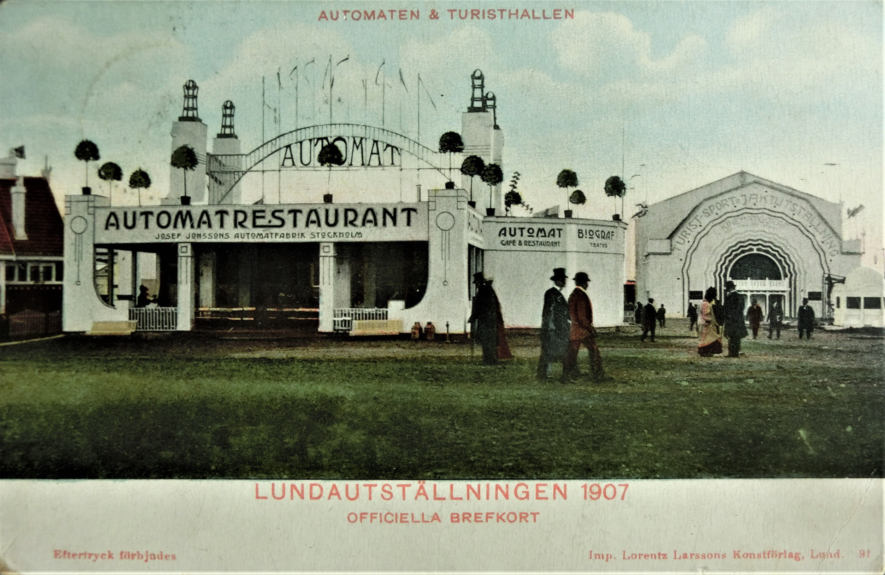
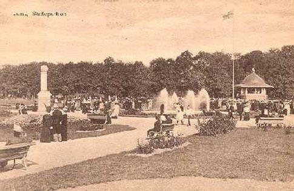
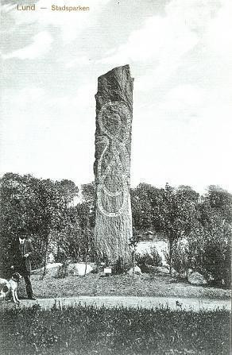

30/5 - 22/9 1907 ägde en industri-, slöjd- och konutställning rum på den plats i Lund, där nu Stadsparken är.



"Lundautställningen 1907: vykort och stämplar" var titeln på ett föredrag, som hölls av två mycket kunniga filatelister på Lunds Filatelistförenings möte den 18 januari 2005. Mötesdeltagarna fick veta följande:
Första steget på vägen mot Lundautställningen 1907 hade tagits på ett möte hos Fabriks- och hantverksföreningen den 8 december 1905, då ett förslag hade antagits och en styrelse hade bildats. Den 6 mars 1906 hade man fått stadsfullmäktiges stöd. Utställningsområdet blev 101000 kvadratmeter stort, och ett nöjesområde skapades. På utställningsområdet fanns det bl. a. en 6500 kvadratmeter stor industrihall och två olika stora torn. Det högsta var 45 meter högt. I det lägre tornet fanns det på andra våningen ett presscenter och på första våningen telegraf, telefon och ett postkontor, där speciella utställningsstämplar samt paket- och rekettter användes. Lorentz Larsson hade ensamrätt att fotografera på utställningsområdet och att trycka vykort. Det finns tecknade vykort, som är gjorda innan byggnaderna var färdiga, och dessutom icke officiella vykort, som är tagna vid entrén, och piratvykort inne från området. Mot slutet av utställningen hade medaljer i guld och silver delats ut till utställarna, vilket hade resulterat i en del vykort med tilltryck.



Kvar i Stadsparken från utställningen finns idag endast Theodor Wåhlins åttkantiga musikpaviljong och en globtoppad stenpelare från AB Ödewoldsklossers sandstensbrott. Båda finns avbildade på nedanstående vykort från 1900-talets början [senast 1912 enligt poststämpeln].

Minnessten
Vid södra sidan av fågeldammen i Stadsparken har man rest en minnessten över utställningen 1907. Den är utformad som en runsten. Texten är dock skriven med vanliga bokstäver. I slingan på stenen kan man läsa följande:
Å det område inom vilket industri-, slöjd- och konstutställning år 1907 afhörs anlades Lunds stad under åren 1909-1911 denna park. Må den blifva samhället till gagn och trefnad.
Lästips
Blom, K. Arne, Allt ljus på Lund. Boken om den stora utställningen 1907., Stiftelsen Lundaguiden, Lund 2007, ISBN: 978-91-973770-9-6
Karlsson, Conny, Lundautställningen 1907, Kultursmedjan Lundensis, Lund 2007, ISBN 978-91-974692-7-2
